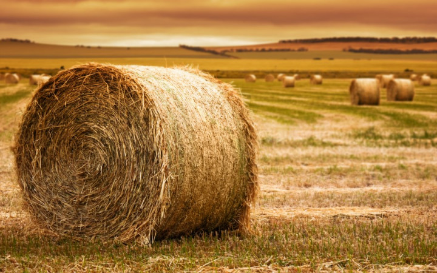

Fowers Farm
We welcome you to the Fowers Family Farm! We have a great enviornment for all kinds of crops to grow, and tons of time spent into growing the perfect crops. Easy access to the bails! All bails are kept underneath a shed to keep them dry and way from the rain. all our hay and straw are made into bails and tied up with twine.
